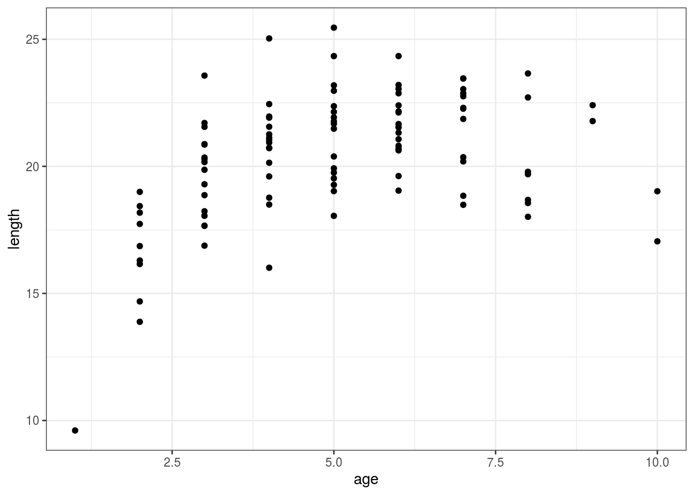

This exercise consists of two parts:
1) Fitting a Von Bertalanffy growth curve
2) Quantifying functions for fish assemblages
Let’s start with loading the packages we will need today. If you haven’t already, you may need to install them using the function install.packages()
library(dplyr)
library(ggplot2)
library(fishualize)
library(magrittr)This growth model is the most commonly used for fishes and can be fitted to length-age data (with the use of otoliths).
It uses the following formula:
\[
L = L_{inf} (1 - exp(-k(t-t_0))),
\]
where \(L\) is the predicted length, \(t\) is the age, \(L_{inf}\) is the asymptotic average length, \(K\) is the growth rate coefficient, \(t_0\) is a modeling parameter represents the time or age where the average length is zero.
We can try to fit this model to extract the three parameters. To do this, we will need to use the R function nls() (non-linear least squares regression).
nls(formula, data, start)
formula is a nonlinear model formula including variables and parameters (In our case the Von Bertalanffy model).
data is a data frame used to evaluate the variables in the formula.
start is a named list or named numeric vector of starting estimates (TIP: use list(linf = 20, k = 0.5, t0 = 0)).
First things first, let’s simulate some data to use. Copy the code block below and simply run it in R to simulate data.
data <- data.frame(
age = as.numeric(rpois(100, 5)),
linf = rnorm(100, 22, 2),
k = rnorm(100, 0.7, 0.1)
) %>%
mutate(length = linf * (1 - exp(-k*age))) %>%
select(age, length)We now created a dataframe with 100 observations of length and age of a fish species. We will use this data to fit our model. First we have a quick look at the data.
ggplot(data) +
geom_point(aes(x = age, y = length)) +
theme_bw()
Go ahead and try to fit the model with the nls() function.
TIP: use start = list(linf = 20, k = 0.5, t0 = 0).
Solution
fit <- nls(length ~ linf * (1 - exp(-k*(age - t0))),
data = data,
start = list(linf = 20, k = 0.5, t0 = 0))What are the estimated values for k, linf and t0?
summary(fit)##
## Formula: length ~ linf * (1 - exp(-k * (age - t0)))
##
## Parameters:
## Estimate Std. Error t value Pr(>|t|)
## linf 21.3358 0.2608 81.796 < 2e-16 ***
## k 1.0118 0.1642 6.161 1.65e-08 ***
## t0 0.4379 0.2088 2.097 0.0386 *
## ---
## Signif. codes: 0 '***' 0.001 '**' 0.01 '*' 0.05 '.' 0.1 ' ' 1
##
## Residual standard error: 1.83 on 97 degrees of freedom
##
## Number of iterations to convergence: 5
## Achieved convergence tolerance: 3.884e-06Now add a column to our dataframe with the predictions and make a figure. (TIP If you use ggplot2, use the geom_smooth() option)
data <- data %>%
mutate(l_predict = predict(fit))
ggplot(data) +
geom_point(aes(x = age, y = length)) +
geom_smooth(aes(x = age, y = l_predict), se = FALSE, color = "red") +
theme_bw() +
labs(x = "Age (years)", y = "Length (cm)")We will calculate 4 functions for 10 fictive fish assemblages: N excretion, biomass, biomass production, and bioerosion rate. See below all the needed formulas:
First load the dataframe called “fish_assemblages.csv”.
It also contains all parameters you need.
Bioerosion rate
\[BV = 0.000676 e^{0.135L}\]
L = Total length (cm)
BV = Bite volume (cm^3)
\[Bioerosion = BR*BV*FL*CD\]
BR = bite rate in bites/min
BV = bite volume in cm3
FL = length of feeding day in minutes
CD = carbonate density in g/cm3
Chlorurus microrhinos:
FL = 650
BR = 7.9
CD = 2.44 g/cm3
Biomass and biomass production
\[L = Linf (1 – exp(-K (t – t0))\]
\[Biomass = a * length^b\]
N excretion
Here we use a simplified method: linear regression with biomass.
\[Excretion = intercept + slope * biomass\]
Start with loading the data and exploring what’s inside.
data <- read.csv("fish_assemblages.csv")
summary(data)## site species length lw_a
## s15 : 50 Acanthurus_lineatus : 85 Min. : 5.00 Min. :0.01175
## s19 : 50 Cephalopholis_argus : 50 1st Qu.: 9.00 1st Qu.:0.01585
## s30 : 50 Chaetodon_ornatissimus: 96 Median :13.00 Median :0.01585
## s32 : 50 Chlorurus_microrhinos : 53 Mean :17.39 Mean :0.01730
## s4 : 50 Chromis_xanthura :216 3rd Qu.:20.00 3rd Qu.:0.01778
## s45 : 50 Max. :68.00 Max. :0.02344
## (Other):200
## lw_b N_excretion_slope N_excretion_intercept linf
## Min. :2.950 Min. :0.0001100 Min. :0.000000 Min. :15.0
## 1st Qu.:2.950 1st Qu.:0.0001200 1st Qu.:0.001100 1st Qu.:15.0
## Median :2.970 Median :0.0001500 Median :0.008000 Median :20.0
## Mean :2.982 Mean :0.0001397 Mean :0.006295 Mean :30.2
## 3rd Qu.:3.010 3rd Qu.:0.0001500 3rd Qu.:0.008000 3rd Qu.:38.0
## Max. :3.040 Max. :0.0001600 Max. :0.015000 Max. :70.0
##
## k t0
## Min. :0.1300 Min. :0
## 1st Qu.:0.2400 1st Qu.:0
## Median :0.6100 Median :0
## Mean :0.4591 Mean :0
## 3rd Qu.:0.6100 3rd Qu.:0
## Max. :0.6500 Max. :0
## We have 10 sites and 5 species.
Now try and calculate all four functions. For biomass production (g/day), you will need to transform the formula a bit to first calculate the age of each fish. Then you can estimate the length of the fish at age + 1/365 (i.e, how much the fish will grow in one day). Using both the biomass of the lenth and the predicted future length, you can calculate the change in biomass per day.
Once you calculated the process per individual, you can summarize per site.
### bioerosion
data <- data %>%
mutate(bioerosion = case_when(
species == "Chlorurus_microrhinos" ~
0.000676 * exp(0.135 * as.numeric(length)) * 7.9 * 2.44 * 650,
TRUE ~ 0))
### biomass
data <- data %>%
mutate(biomass = lw_a * length^lw_b)
### biomass production
data <- data %>%
mutate(t = log(1 - length/linf)/-k) %>%
mutate(length2 = linf * (1 - exp(-k*(t + (1/365))))) %>%
mutate(biomass2 = lw_a * length2^lw_b) %>%
mutate(biomass_prod = biomass2 - biomass)
### excretion
data <- data %>%
mutate(
excretion = N_excretion_intercept + biomass * N_excretion_slope)
### Total function per site
summary <- group_by(data, site) %>%
summarise(N_ex = sum(excretion),
biomass_prod = sum(biomass_prod),
biomass = sum(biomass),
bioerosion = sum(bioerosion))Make a barplot of each function per site.
(TIP If you use ggplot2, use geom_col() )
Which site has the highest function?
ggplot(summary) +
geom_col(aes(x = site, y = N_ex), alpha = 0.9) +
scale_fill_fish_d() +
theme_bw() +
labs(x = "Site", y = "N excretion (g N/day)")ggplot(summary) +
geom_col(aes(x = site, y = biomass), alpha = 0.9) +
scale_fill_fish_d() +
theme_bw() +
labs(x = "Site", y = "Biomass (g)")ggplot(summary) +
geom_col(aes(x = site, y = biomass_prod), alpha = 0.9) +
scale_fill_fish_d() +
theme_bw() +
labs(x = "Site", y = "Biomass production (g/day)")ggplot(summary) +
geom_col(aes(x = site, y = bioerosion), alpha = 0.9) +
scale_fill_fish_d() +
theme_bw() +
labs(x = "Site", y = "Bioerosion (g CaCO3/day)")Bonus: Summarize per site and species and investigate the contribution of each species to each function. Make a barplot colored per species (Tip: use fill for this). Which species contributes the most to each function?
summary <- group_by(data, site, species) %>%
summarise(N_ex = sum(excretion),
biomass_prod = sum(biomass_prod),
biomass = sum(biomass),
bioerosion = sum(bioerosion))
ggplot(summary) +
geom_col(aes(x = site, y = N_ex, fill = species), alpha = 0.9) +
scale_fill_fish_d() +
theme_bw() +
labs(x = "Site", y = "N excretion (g N/day)")ggplot(summary) +
geom_col(aes(x = site, y = biomass, fill = species), alpha = 0.9) +
scale_fill_fish_d() +
theme_bw() +
labs(x = "Site", y = "Biomass (g)")ggplot(summary) +
geom_col(aes(x = site, y = biomass_prod, fill = species), alpha = 0.9) +
scale_fill_fish_d() +
theme_bw() +
labs(x = "Site", y = "Biomass production (g/day)")ggplot(summary) +
geom_col(aes(x = site, y = bioerosion, fill = species), alpha = 0.9) +
scale_fill_fish_d() +
theme_bw() +
labs(x = "Site", y = "Bioerosion (g CaCO3/day)")